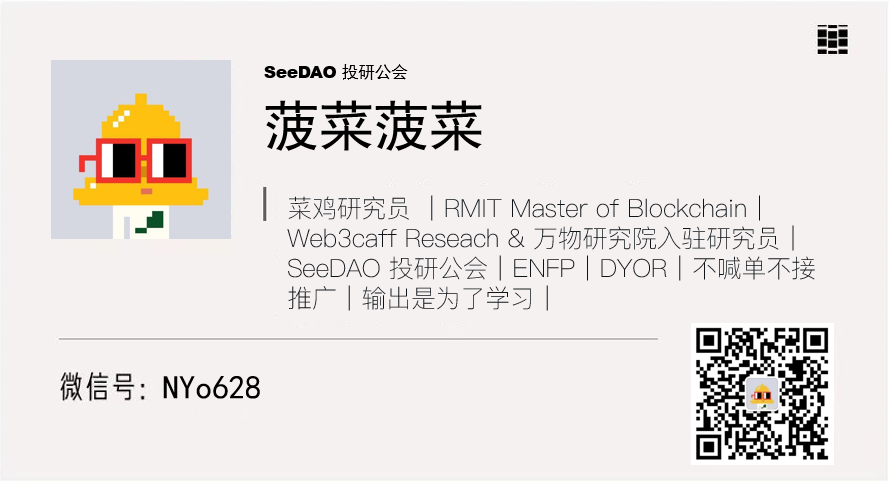
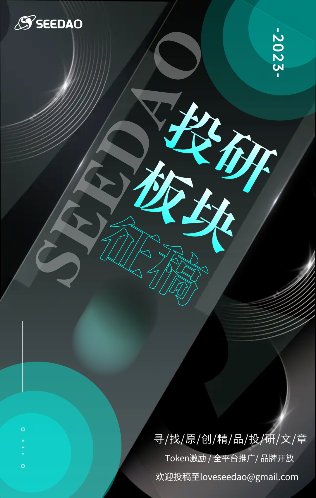

/ RWA迈向Web3 Mass Adoption之路/
作者：菠菜菠菜！
自 2008 年区块链技术诞生以来，加密市场到如今经历了飞速的发展。然而，整个加密市场的总市值到目前为止还没有整个苹果公司的市值高，并且 Web3 仍然缺乏在现实世界中的实际应用。但是，最近花旗银行的一份新的研究报告《金钱、代币与游戏》可能会改变这一现状，报告中，花旗银行将现实世界资产代币化（RWA）作为下一个阶段主要的叙事，认为其可能会对 Web3 的发展产生巨大影响，将促使区块链及 Web3 行业拥有下一个十亿用户，并可能带来数十万亿美元规模市场的经济活动。
而在现实世界资产代币化（RWA）这个大叙事中，菠菜认为 ERC-3525 标准具有巨大的潜力，这是一种半同质化代币（SFT）标准，它将 ERC-20、ERC-721 和 ERC-1155 的特性结合在一起，使得其可以更有效的代表和管理更复杂的资产，如债券、优惠券、发票、期货、期权和 ABS 等。通过这种方式，ERC-3525有很大潜力促进现实世界资产代币化（RWA）的发展，从而推动 Web3 的现实世界广泛应用。
本文将对比 ERC-20、ERC-721、ERC-1155 和 ERC-3525 的组成部分带大家了解这几个代币标准的区别，然后从三个层次探讨了解 ERC-3525 的数字世界建模思想，最后展望未来 ERC-3525 在哪些领域值得关注。
*特别感谢萨摩老师对本文的细心润色优化
背景介绍
在介绍 ERC-3525 之前，先介绍一下什么是 EIP 和 ERC：
EIP，全称 Ethereum Improvement Proposals (以太坊改进提案)，是以太坊社区中的一个框架，允许任何人建议对以太坊网络的改进或更新，这些提案可以涉及到以太坊协议本身，也可以是相关的客户端 API，或者是给以太坊生态圈的其他项目提供有关的标准。
ERC，全称 Ethereum Request For Comment (以太坊意见征求稿)，ERC 则是 EIP 的一种特殊类型，主要关注于应用层面的标准，如智能合约设计模式、接口定义等。这些 ERC 通常会为以太坊应用开发者提供一个标准模板，以保证不同的项目和应用可以有一个共享的接口或者标准。关于两者的关系，简单来说，所有的 ERC 都是 EIP，但 EIP 不一定都是 ERC，EIP 涵盖更广泛一些，包括底层协议的改变等等。
ERC-3525 创建于 2020 年 12 月 01 日，由 Solv Protocol 的核心成员设计，并得到以太坊社区核心开发者的支持，从最初的提议到最终被社区接受，这个过程长达 20 个月，期间通过几个草案进行了完善，最终于 2022 年 9 月正式通过成为 ERC 代币标准，作为核心成员为华人的团队创建的以太坊标准，ERC-3525 也正在行业中迎来新的一轮关注高峰。
现有 ERC 代币标准对比-如何理解 ERC-3525？
ERC-3525 是一种半同质化代币（SFT）标准，许多人第一次了解 ERC-3525 可能会觉得这是一个ERC-20 和 ERC-721 的缝合怪，但实际上 ERC-3525 是一种基石性通用标准，甚至在某些领域相比于 ERC-20、ERC-721 和 ERC-1155 有压倒性优势，接下来菠菜将通过对比其他代币标准的关键组成部分(关键组成部分忽略名称、符号等其他属性)以及优劣势带大家理解 ERC-3525.
图片来源：solv.finance PPT
ERC-20
ERC-20 是以太坊应用最广泛的代币标准之一，即同质化代币，意味着每个代币在功能和价值上都是相等的，没有任何区别。这就是为什么它们被称为 “同质化” 的原因。稳定币就是 ERC-20 应用的一个重要例子，每一个稳定币都是同质化的可以互相互换，代表着同样的价值。
关键组成部分：address 和 value、address 是指定资产所有者的地址，value 是代表该地址拥有的代币数量，在 ERC-20 标准下，每个地址(Address)可以关联一个余额(Value)，这个余额代表了这个地址持有的代币数量，所有余额都是一样的没有区别。
特性优势：ERC-20 代币对应的是可互换的资产，就像传统的货币或股份，这使得 ERC-20 在许多应用中都非常有用，例如代表公司的股份或用作去中心化交易所（DEX）的交易对。ERC-20 也被广泛用于 DeFi 应用，如借贷平台和流动性挖矿，并且 ERC-20 可进行非整数拆分，你可以拥有 0.5 个 ERC-20 代币。
局限性：由于 ERC-20 代币是完全可互换的，这使得它们不能用于代表独特或非同质化的资产，例如艺术品或收藏品。
ERC-721
说到 ERC-721，就不得不提起非同质化代币（NFT，Non-Fungible Tokens），我们所熟知的无聊猿、Azuki等知名NFT都属于 ERC-721 标准，它描述了非同质化代币应如何在以太坊区块链上被创建和管理。
与 ERC-20 代币每个单位都是等价的不同，ERC-721 代币的每个单位都是唯一且不可替换的，这使得它们成为表示独特的数字或现实世界的资产（例如艺术品、房地产、收藏品等）的理想选择。最早的NFT CryptoPunk 并不是 ERC-721 标准，而是ERC-20标准，但 CryptoPunk 的出现促使了 ERC-721的诞生，成为了NFT等众多有价值应用的基石。
关键组成部分：tokenId和owner。**tokenId是一个唯一的标识符，用于区分不同的 ERC-721 代币，owner**是代币所有者的地址，在 ERC-721 标准下，每个代币都是不同且唯一的，由 ID 这个属性来区别，而每个 ID 都关联着一个所有者。
特性优势：ERC-721 代币是非同质化的，每个代币都是独一无二的。这使得它们非常适合于代表独特的物品或资产，如艺术作品、收藏品、房地产或其他独特的资产。这也使得它们在创建和交易数字艺术和其他独特数字资产方面有很大的价值。
局限性：由于 ERC-721 代币的非同质化特性，它们不能有效地用于代表可互换的资产，如货币或股份，在流动性方面缺乏优势，可组合性较差不可拆分，你不能拥有 0.5 个 ERC-721 代币。
ERC-1155
ERC-1155 是一种多实例通证标准，结合了 ERC-20 和 ERC-721 的特性，旨在更高效、灵活地处理多种不同类型的代币。在之前的 ERC-20 和 ERC-721 标准中，每种不同的代币都需要部署一个新的智能合约。这意味着，如果你要创建新的代币，你需要部署新的合约，这可能会带来重复的代码和昂贵的 gas 费用。而且，不同的合约之间可能还需要处理复杂的互动。
ERC-1155 提供了一种在单一智能合约中管理多种代币的方法，每种代币可以是同质的（像 ERC-20 代币）或是非同质的（像 ERC-721 代币），比如在游戏中，你可以用 ERC-1155 创建不同的武器种类（非同质化）如棍子、刀、枪，而在每个武器种类（非同质化）下的每一个武器都是同质化的，1 号刀和 10 号刀都是完全一样的（同质化），但刀和枪是不一样的（非同质化）。
关键组成部分：id、value和owner。**id**是一个唯一的标识符，用于区分不同的 ERC-1155 代币， value 表示特定 id 的代币数量， owner 是代币所有者的地址，用武器的例子来说，不同的武器种类代表着不同的 ID，而每个武器种类 (ID) 下的武器数量就是 Value，每个种类下的武器 (Value) 都是一样的。
特性优势：ERC-1155 代币可以同时代表可互换和非同质化的资产，使它们在一系列应用中都非常有用。例如，一款游戏可能使用 ERC-1155 代币来代表玩家的装备类型（非同质化）和装备数量（同质化）。
局限性：尽管 ERC-1155 代币的灵活性使它们在很多情况下都很有用，但这种灵活性也使得理解和实现 ERC-1155 可能比 ERC-20 或 ERC-721 更复杂，并且不能代表可以被部分交换的资产，例如债券或期货，以及无法进行非整数拆分，你不能拥有 0.5 个 ERC-1155 代币。
ERC-3525
ERC-3525 是一种半同质化代币（SFT，Semi-fungible Token）标准，结合了 ERC-20、ERC-721 和 ERC-1155 的特性，相比于 ERC-1155 来说更复杂，但可以用来表达和管理复杂的数字财务资产，如证券、债券、期权、期货、互换、保险策略等，相比于其他代币标准更具备可组合性，ERC-3525 代表了一种数字世界建模思想，可以从三个层面来理解：可拆分组合的超级 NFT、通用数字容器、可视化的智能合约。
关键组成部分：id、value、Slot和Address。每个 SFT 都有一个等同于 ERC-721 的 id 属性，以便将其识别为一个全球唯一的实体，这样 SFT 就可以以与 ERC-721 兼容的方式在地址之间进行转移和批准。此外，每个代币还包含一个 value 属性，代表了代币的数量性质，类似于 ERC-20 代币的 “余额” 属性。
Address代表了拥有 Slot 和 ID 的地址，每个地址可以拥有任意数量和类型的 ID 和 Slot。与众不同的是 Slot 属性，具有相同 Slot 的不同 ID 的 Value 是可以转账和互换的，不同的 Slot 之间是无法进行转账和互换的，一个 Slot 可以有很多种 ID，而不同的 ID 只能有一个 Slot。
ERC-3525 的重点在于 Slot，简单来说 Slot 代表了一种分类，同一个 Slot 下会有很多 ID，每个 ID 虽然都是不同的拥有着自己的 Value，但在同一个 Slot 下不同的 ID 可以被认作是相同的可以交换组合拆分。
拿会员卡来举例，假设会员卡有两个 Slot 分别是肯德基和麦当劳，每个肯德基和麦当劳的会员卡有不同的 ID 代表着不同人的会员卡比如中本聪的卡和 V 神的卡，而每个人的会员卡都有一个 Value 来代表他的一个积分。
那么在同样一个 Slot 下也就是肯德基会员卡中，中本聪卡里的积分和 V 神卡里的积分被视为是一样的东西，中本聪可以给 V 神卡里转积分也可以接收从 V 神卡里发送过来的积分，中本聪也可以把自己的积分卡里的积分拆成主卡和副卡(两个不同的 ID，任意分配积分 Value)，也可以把主卡和副卡合并回来。
而在不同的 Slot 中，肯德基和麦当劳由于是两个不同的公司，肯德基的积分没有办法转到麦当劳的积分卡中去，自然也就不具备 Value 和 ID 之间的可转帐、可交换和可组合性。
特性优势：ERC-3525 由于其更复杂的结构，可以被用来表示各种复杂的数字结构如证券、债券、期权、期货、互换、保险策略、会员卡等。此外，因为它是半同质化代币，所以每种代币可以有自己的特性和规则，使得这个标准非常灵活和强大，并且由于 Slot 的存在，ERC-3525 可以实现从 ID 到 ID 的转账，就像中本聪的积分卡转积分给 V 神的积分卡一样，并且还能支持非整数的拆分和组合。
局限性：ERC-3525 的复杂结构，导致其理解门槛较高。由于 Slot 的存在，在技术结构上存在更加中心化的特征。开发难度较高。
从三个层面理解ERC-3525是一种数字世界建模思想
ERC-3525由于其相比于其他代币标准更复杂的结构，其作为一种通用性代币标准，通过其数据结构的可组合性使得其可以在数字世界中创造各种复杂代币结构的能力，就像在现实世界中使用乐高积木创造各种复杂的模型一样，可以说 ERC-3525 代表了一种数字世界建模思想，要想深入理解 ERC-3525 可以从三个方面理解：可拆分组合的超级 NFT、通用数字容器、可视化智能合约。
可拆分组合的超级 NFT：
ERC-3525 只需要转换其属性就可以同时表达 ERC-20、ERC-721 和 ERC-1155 这三种代币标准，例如：
表达 ERC-20：Slot 相同， ID 之间的 Value 就可以代表同质化代币
表达 ERC-721：Slot 不同，只有一个 ID 的情况下就可以代表非同质化代币
表达 ERC-1155：Slot 不同，拥有多个不同 ID 的情况下就可以代表多实例代币
但 ERC-3525 不止于此，在此之上 ERC-3525 可以实现非同质化代币的拆分，比如一个无聊猿可以真正意义上的被拆分成好几份而不是通过一个额外的合约去实现 NFT 碎片化。对于大部分第一次了解到 ERC-3525 的人来说，普遍的理解可能就是将 ERC-3525 理解成一种可拆分组合的超级 NFT，站在这一层理解 ERC-3525 没有任何问题，但这只是冰山一角，并没有很好的理解 ERC-3525 更大的潜力。
通用数字容器：
要理解到 ERC-3525 是通用数字容器这一层的话，需要理解 ERC-3525 是一种账户抽象（Account Abstraction），上面提到在会员卡的案例中，ERC-3525 可以实现 ID 到 ID 之间的转账，其内部的 ID 实质上就是一个账户，它具有接收、存储和发送功能，就如同一只装满各种数字资产的篮子。既然 ERC-3525 作为一个抽象账户，也就意味着我们可以将某个 Slot 中的 ID 的操作权限分离解藕，授予给其他的钱包地址，而不只是这个 ERC-3525 智能合约的所有者。
ERC-3525 的账户抽象和 ERC-4337 的账户抽象区别在于，ERC-4337 将智能合约钱包的签名权和所有权解藕后可以使用自定义的签名方式进行操作，比如实现传统的账户密码操作钱包等等，而 ERC-3525 的账户抽象则依然依靠于 EOA 钱包账户（使用私钥操作的钱包）进行操作，并且一个 ID 只能接收同一个 Slot 下的资产。
如果 ERC-3525 的 ID 理解成一种有接收、存储和发送功能账户的话，也就意味着其可以作为一个数字资产的容器，任意的数字资产可以作为溶液倒入这个通用数字容器中变成一种均匀的溶液，这时候这个 ID 的 Value 就变成了一种一篮子资产的份额。
举一个例子，在一个 Slot 中，容器 A (ID: A) 被倒入了 100 个比特币、10 个以太坊，那么比特币和以太坊作为一种溶液进入容器后就会变成均匀的溶液，如果把容器 A 的 Value 均匀分成十份，那么每一个被拆分的容器里面就会同样的拥有 10 个比特币和 1 个以太坊，这时候如果该容器要和另外一个拥有不同成分溶液的容器 (100 个 Doge) 相组合时，新容器中的溶液就代表着 10 个比特币、1 个以太坊和 100 个 Doge，同样这个容器可以继续拆分以及组合，而里面的溶液 (Value) 则代表着这一篮子资产的份额。
理解到这一层就能感受到 ERC-3525 的魔力之处，通过其复杂的数据结构和灵活的可组合性，你可以在数字世界中创造无数种复杂的代币结构，就像俄罗斯套娃一样在容器中可以反复嵌套很多层资产，这就非常适合用来表达一些结构化金融资产比如 ABS、MBS 等。
可视化智能合约：
“ERC-3525 作为一种可视化智能合约“这一层意思其实并不难理解，同样把 ERC-3525 比作是一个容器，那么就相当于在容器上装上了一个实时更新的显示屏，上面显示着这个容器中的所有信息内容以及变化，比如溶液中含有什么成分(有哪些资产以及什么比例)，可视化的特性可以使得其更容易进行管理和更透明化。
虽然只是实现了一种智能合约的可视化，看上去非常简单，但是其背后代表的意义却并不简单，如果在 2008 年之前有 ERC-3525 这门技术且被广泛使用，或许金融危机就不会发生了，这还得从 08 年金融危机的导火索之一开始说起，那便是金融衍生品乱象。：
在互联网泡沫破灭后，美国为了刺激经济开启了低利率宽松货币政策，而贷款的低利率会导致更多人去贷款。如果你看过一部电影叫《大空头》的话，你应该会对电影中的一幕印象深刻：一个人没有任何抵押品甚至用他的狗的名义都可以在银行贷到款买房，为什么这种离谱的情况都能发生？难道银行不怕这些人不还钱吗？实际上银行还真不怕，这都因为有一种金融衍生品叫 MBS。
抵押贷款支持证券（Mortgage-Backed Securities，简称 MBS）是一种资产支持证券，其收入流来源于一组抵押贷款资产，例如住宅或商业抵押贷款。这些贷款由贷款提供者（如银行）打包并出售给特殊目的实体（SPE），该实体再将它们转化为可出售给投资者的证券。
这种操作方式实质上是把一组抵押贷款打包成一个新的金融产品出售给投资者。对于银行而言，这种操作可以将原本的贷款风险转移，通过卖出这些打包的抵押贷款获得现金，以赚取利差。那些被评级为高风险的贷款，例如无收入无抵押的贷款，被称为次级贷款。这就是为何 2008 年的金融危机被称为“次贷危机”，因为许多次级贷款的违约导致了 MBS 市场的崩溃。
那么既然房贷可以被打包成金融资产，其他贷款（如学生贷款、汽车贷款、信用卡贷款）自然而然的也可以被打包成金融资产，这类资产通常被叫做资产支持证券（ABS），MBS 和 ABS 这些金融衍生品的收益底层逻辑都来源于贷款人还款的利息和本金，这些金融衍生品看似有高额的回报，吸引了大量的投资者入场，而问题也随之而来。
在可以转移风险的这种模型下，银行只关注贷款数量的增加，忽视了贷款质量的重要性，许多风险较高的次级贷款被打包进入 ABS 和 MBS，而随着 ABS、MBS 的流行，金融机构甚至开始制造更复杂的金融衍生品——债务抵押证券（CDO）。
如果说 ABS 和 MBS 是许多贷款打包后的金融资产，那么 CDO 就是 ABS 和 MBS 打包后的金融资产，形成了更多层级的金融产品。将不同品质的资产打包后增加了投资组合的多样性，并设置了劣后（收益率较高但违约时先承担本金损失）、优先（收益较低但违约时本金相对更安全）的不同偿付等级，理论上可以增加投资组合整体的稳定性，获得更好的夏普比率（风险收益比）。
然而，这种复杂的金融产品让投资者对其真实风险的理解变得更加模糊，而评级机构的道德风险也进一步加重了这一问题，有一些评级机构为了抢客户会将本应该属于较高风险级的资产评为低风险级，这进一步加大了风险。
加上信用违约互换（CDS）等保险产品将 CDO 的不同层级进行进一步保险、拆分、重新打包，在新的 CDO 中混入 CDS 等其他资产，称之为合成 CDO（Synthetic CDO），到最后人们已经被层层嵌套的金融衍生品搞地完全无法知道支撑其背后的到底是哪些资产了。许多次级贷款被掺进了许多被评为所谓低风险的金融衍生品中，失真的评级又让高风险资产配上了极低的保费，层层打包后卖给了各种券商各种投资人，整个金融系统的杠杆率在飞速提升，越发摇摇欲坠。
随着美国开始加息后，贷款利息增长导致许多贷款人开始出现违约情况。这个问题最初在次级贷款市场中最为明显，然而由于次级贷款被打包在 ABS、MBS 甚至 CDO 中，这个问题迅速在金融市场中蔓延开来。许多看似高等级、低风险的金融衍生品突然暴露出高违约风险，而投资者对这些衍生品的真实风险一无所知，市场信心被严重打击，金融市场出现了大规模的抛售，这就是 2008 年金融危机的主要导火索之一。
这种情况正是由金融市场的无序、不透明和过于复杂的结构所引发的。然而，ERC-3525 这种可视化智能合约正好能够解决这个问题。ERC-3525 可以实现复杂的金融衍生品，比如 ABS、MBS 和 CDO 等的嵌套。更为重要的是，它的可视化特性能让人直接看到这些复杂嵌套产品中都具体包含哪些成分，对风险控制起到重要作用。
放在 2008 年的场景之下，就是再复杂的资产证券化产品，都能根据其底层资产的收益率违约率，计算出实时的客观的评级。这种透明度的提升，结合区块链智能合约的自动执行，提高了交易的安全性和信任度，防止系统性风险的累积。
如果在2008年之前 ERC-3525 就得到了应用，那每一个投资者、每一个市场参与者，都可以清晰地了解到他们投资的具体情况，也许当年的危机就不会发生。由此可见 ERC-3525 的可视化智能合约这一层对未来真实世界资产上链（RWA）的资产管理有着多么重要的意义。
未来哪些ERC-3525应用领域值得关注？
作为一种可拆分和组合的超级NFT、通用数字容器，同时又具有可视化智能合约的特性，ERC-3525 的核心竞争力在于其能够借助数据结构转换来实现无比的灵活性、可组合性，以及通过可视化功能带来的极致透明度和执行便利。这种创新的结构赋予了 ERC-3525 在一些领域产生巨大优势，包括但不限于：
真实世界资产上链（Real-World Assets，RWA）：
对于真实世界资产（RWA）的定义，我们可以将其简单理解为区块链系统以外的所有资产，包括但不限于货币、股票、债券、商品、基金等证券类资产，以及房地产、艺术品和收藏品、农业、气候资产以及无形资产（如碳信用额和知识产权）等非证券类资产。
根据花旗银行的最新研究报告《金钱、代币与游戏》，预计到 2030 年，高达 5 万亿美元的资金可能会流向新型数字货币形式，如中央银行数字货币（CBDC）和稳定币，而其中大约一半的资金可能会基于区块链的分布式账本技术。这一预测着眼于法律和技术的持续革新，现实世界资产的代币化（Real-World Asset Tokenization，简称 RWA）被看作是引领区块链行业进入数十万亿美元市场的关键驱动因素。事实上，任何可以被赋予价值的资产，无论是红酒还是金融资产，都有可能被代币化，借助区块链技术实现流动性的大幅提升和全球化的交易。
ERC-3525 在真实世界证券资产中具有显著的优势。作为一种通用数字容器，ERC-3525 能够表达现实世界中几乎所有类型的金融资产，通过智能合约可视化功能，能够清晰地揭示这些金融资产的内部结构，极大地提高了其透明度，将风险直观地呈现出来。
不仅如此，除了传统的金融资产外，ERC-3525 还在供应链金融方面展示了一种全新的可能性。借助其独特的属性，ERC-3525 能够对供应链中的各种资产进行代币化，包括原材料、生产设备、存货、应收账款等，供应链作为区块链的一个重大叙事之一，菠菜举一个实际应用案例来说明 ERC-3525 在供应链金融中的颠覆性：
在供应链金融中，应收账款保理（Factoring）是一种常见的业务模式。它允许企业将应收账款以一定的折扣价格出售给第三方（通常是保理公司），从而获取必要的融资，改善自身的现金流状况。然而，在传统的供应链金融模式中，这种保理服务通常只对大型公司和一部分信誉良好的中小企业开放，大部分中小企业往往难以享受到这种服务。
这一问题的根本原因在于票据的证伪难题，中小企业普遍缺乏充足的信用支撑，投资人无法对大量的中小企业进行合理风控。导致中小企业在现实中普遍存在融资难题，如果中小企业无法接受账期的延迟支付，就很难接到大企业的订单；但接受大企业的订单，又会导致企业的流动资金紧张，增加现金流断裂的风险。
想象一下，如果在这个场景中我们将支付票据进行通证化。通过 ERC-3525，我们可以创建一对账户：支付账户（Payable）和应收帐款账户（Receivable）。这两个账户之间像形成了一种类似于量子纠缠的支付通道，只要买家向支付账户汇款，资金就会通过智能合约自动分发到应收帐款账户中。这意味着无论应收帐款被拆分为多少份，无论最终落入谁的手中，最后都会按照预定的比例转移到应收帐款账户中，这大大增加了供应链金融保理业务的流动性和可组合性。
在传统的供应链金融保理业务中，票据真伪鉴定一直是一个难题。在西方国家，票据通常由各个公司自行打印，而非通过统一的渠道，这使得票据的真伪难以辨别。同时，银行将应收账款票据作为抵押也很难实操，因为每次抵押都需要让两家企业签合约抵押票据收益权，违约涉及还涉及付款对象的转移。这极大地阻碍了大部分中小企业开展保理业务和融资。
然而，区块链技术的运用可以转变这种局面。通过智能合约，我们可以在开票过程中加入一个确认（Confirm）步骤。一旦确认，票据就会生成并附带双方的确认签名。这就确保了票据是在双方已确认的状态下生成的。考虑到账期拖欠实际上等同于卖家向买家提供的一种形式的贷款，如果我们能够有效地解决票据真伪问题，卖家就能够依托买家的信誉将这个应收账款以一定的折扣率售卖给保理机构，从而得到贴现款项。
举个例子，如果一个卖家拥有一笔面值为 100 万元的应收账款，而保理机构愿意以 90% 的折扣率购买这笔账款，卖家就能立即获取 90 万元的现金流，而不需要等待买家的支付。这个过程实质上是通过转移信用风险来加速现金流的流动，这是通过 ERC-3525 以及区块链技术可以实现的。
借助区块链的可追溯性和透明性、智能合约的自动执行和验证，以及 ERC-3525 的执行便利，我们可以看到，ERC-3525 在传统金融资产通证化，特别是供应链金融中具有显著优势，但在 RWA 赛道中，区块链技术的广泛应用更需要主权政府、受监管的金融机构和大公司的支持，但这也符合 ERC-3525 在技术结构上相对中心化的特性，并且随着预言机等中间件设施的不断更新和完善，真实世界资产上链会是 ERC-3525 未来的一个大叙事，非常值得持续关注。
虚拟资产或商品：
除了代表金融资产以外，ERC-3525 还可以用来代表虚拟的数字商品或项目，如虚拟土地、可升级/可合并的游戏物品、虚拟会员卡、礼品卡、抽奖票等。其中虚拟土地、游戏道具以及会员卡是比较值得关注的领域，对于现有的游戏道具和虚拟土地体系，ERC-3525 展现出了更高的可能性和灵活性，并且 ERC-3525 向后兼容了 ERC-721 标准，这意味着所有支持 ERC-721 标准的协议、平台和钱包集成 ERC-3525 都会比较轻松，这在未来游戏与区块链的结合中 ERC-3525 有潜力表现出更高的可玩性。
随着星巴克奥德赛计划的推出，客户忠诚度计划与 Web3 的结合引发了广泛关注。这可以被理解为一种积分会员卡制度，而星巴克拥有全球领先的客户忠诚度计划，仅在美国地区，就有千万活跃会员。值得注意的是，会员卡可能成为 Web3 发生 Mass Adoption 的一个关键场景，这将有助于吸引大批用户进入 Web3 的世界。
从早先的肯德基和麦当劳案例中，我们可以看出，ERC-3525 代币标准在客户忠诚度计划中表现出显著优势。它能够实现从 ID 到 ID 的收、转、存操作，而且其 Value 能很好地表示会员卡 ID 中的积分数值。因此，ERC-3525 在此应用场景中具有很高的潜力，并在未来将可能发挥出比其他代币标准更大的潜力。。
社交、身份领域以及代币化账户：
由于 ERC-3525 具有可组合性，它可以表达更多的数据结构，这使其在当前的 Web3 社交领域，比如 Lens 这样的协议中，使用半同质化代币 (SFT) 来表达社交图谱可能比非同质化代币 (NFT) 更有优势。此外，借助 ERC-3525 实现灵魂绑定代币 (SBT) 也能表达出更多的属性，比如可以在 SBT 中对一些特定的数据进行量化表示如某场活动中某人的贡献度等。
此外，ERC-3525 作为一种账户抽象以及数字容器，其本身就可以当作是一个“钱包”，因此除了拥有正常区块链钱包所拥有的功能外，ERC-3525 还为其它更具想象力的创新留出了空间。
总结
作为一种可拆分和组合的超级 NFT、通用数字资产容器、和可视化智能合约，ERC-3525 的定位其实并不是为了解决价值创造问题，而是解决价值包装的问题，数字资产可以长出一张动态、具有丰富信息的界面，可以碎片化、合并、打包、组合和编程。
ERC-3525 在 Web3 的未来趋势中展现出了显著的优势。无论是真实世界资产（RWA）、客户忠诚度计划，还是游戏等领域，ERC-3525 都有着显著的潜力。尤其在像供应链金融这样的真实世界资产的细分领域中，ERC-3525 相比于其他标准更是有着压倒性的优势，这些发展方向值得我们持续保持关注。
而目前 ERC-3525 还面临着一些挑战和阻力：
高度的复杂性导致了较高的认知门槛，阻碍了人们对于 ERC-3525 的普遍了解和接受。
ERC-3525 开发难度相较于 ERC-20、ERC-721 和 ERC-1155等标准更高，对创业团队有着更高要求。
ERC-3525 的应用场景可能涉及主权政府和中心化担保机构，属于半中心化地带，与绝对的去中心化精神可能产生冲突，对区块链世界的价值观影响犹未可知。
不论如何，正因为 ERC-3525 目前尚未引起市场的关注，又极具潜力，这才使它更值得我们密切关注。我们期待在未来 Web3 的 Mass adoption 中、ERC-3525 能够发挥重要的作用。
Reference：
[1]https://icg.citi.com/icghome/what-we-think/citigps/insights/money-tokens-and-games
[2]https://eips.ethereum.org/EIPS/eip-3525
[3]https://mp.weixin.qq.com/s/cf8_oDVGBSwXYqEWYmv8uA
[4]https://research.web3caff.com/zh/archives/1996
[5]https://sftlabs.io/2022/09/27/everything-about-fungible-semi-fungible-non-fungible-tokens/
[6]https://www.binance.com/zh-CN/news/top/7221255
